X0X
X0X は M-VAVE FM-1 をグルーヴボックスに変えるファームウェアです。909 と 808、303 が 2 台、そしてブレイクビーツプレイヤーが、すべて同時にステレオで鳴ります。各パートはそれぞれ独自のパターンを演奏でき、パターンを並べてソング(曲)を作ったり、ノブの動きを録音したり、個々のステップに専用のサウンドや再生確率を持たせたりできます。
このバージョンの新機能:What's new(英語)を参照。
このページは非公式の日本語訳です(2026-11-09 時点の原文に基づく翻訳。AI 翻訳支援を使用)。原文は X0X Manual(英語)、誤訳の報告は issue へ。
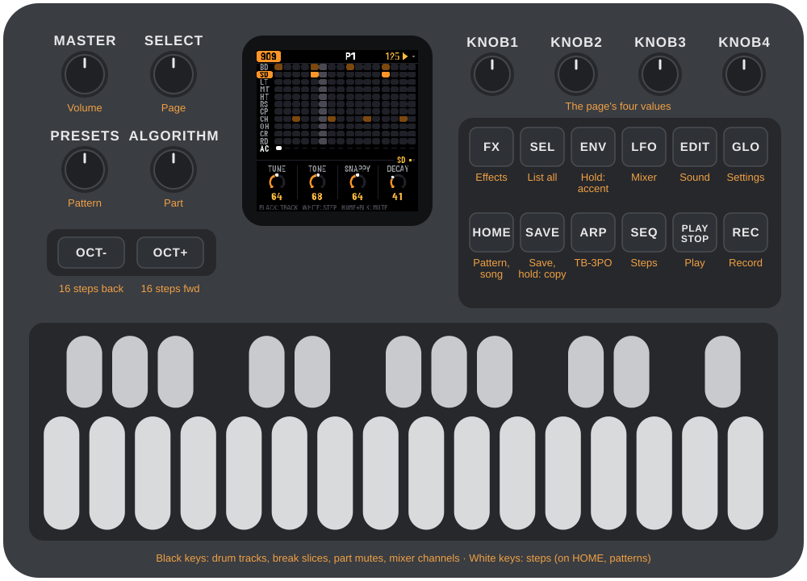
1インストール
まず試すには:X0X エミュレーターなら、まったく同じコードをブラウザー上でサウンド付きで動かせます。マウス、タッチスクリーン、キーボードで演奏できます。
インストール:Chrome か Edge でウェブインストーラーを開き、FM-1 を USB データケーブルで接続して Install を押します。書き込み中はケーブルを抜かないでください。完了すると FM-1 が X0X で再起動します。
アップデート:同じ手順です。アップデートではプロジェクト(パターン、サウンド、ソング、設定)は保持されます。別のファームウェアを入れた場合は保持されません。同じメモリーにはそのファームウェア独自の内容が書き込まれるため、X0X に戻すとプロジェクトは空の状態から始まります。残しておきたい場合は、先にファイルへ保存してください(プロジェクトのバックアップを参照)。
元に戻す:同じページの一番下にある「Back to the stock firmware」で M-VAVE 純正ファームウェアに戻せます(そこのリンクから FM-1 用ファイルをダウンロードし、選んでボタンを押します。受け付けない場合は 2 つ目のリンクの V15 ファイルを使ってください)。M-VAVE 純正のアップデーター M-UPGRADE も使えます。ただし M-UPGRADE 3.11 が認識するのはこのバージョンの X0X だけで、古いバージョンは認識しません(「A USB MIDI device is present but did not answer」と表示されます)。古いバージョンへはボタンで戻してください。
他のファームウェアのインストールは自己責任で行ってください。FM-1 が起動しなくなった場合は「起動しなくなった FM-1 の復旧」を参照してください。
コマンドラインからインストール
リリースページからファームウェアファイル(例:x0x-1.0.fwsc)をダウンロードし、GitHub から X0X のソースを入手、Python 3 に pip3 install mido python-rtmidi でライブラリーを入れて、次を実行します:
python3 tools/fm1_install.py x0x-1.0.fwsc(hugelton.github.io のウェブインストーラーがインストールするのは X0X ではなく Felucca です。)
2はじめに
電源を入れてから最初のビートを保存するまでの、5 分間のツアーです。X0X を起動すると画面には 909 が表示され、すべてのパートは空の状態です。
- キックを足す。黒鍵 1 を押してバスドラムを選びます(音が鳴ります)。次に白鍵の 1、5、9、13 を押します。
- PLAY を押す。キックが毎拍鳴ります。
- クラップを足す。黒鍵 7 を押し、白鍵 5 と 13 を押します。パターン再生中にドラムを選んでも音は鳴らないため、うっかり余計なヒットが入ることはありません。
- オープンハットを足す。黒鍵 9 を押し、白鍵 3、7、11、15 を押します。
- 303 のラインを作る。ALGORITHM を時計回りに 2 クリック回して 303A にし、ARP を押します。OCT+ を押すたびに新しいラインが書き込まれます。気に入るラインが出るまで続けましょう。
- 303 のサウンドを形作る。EDIT を押すと、ノブが 303 のフィルターになります。KNOB 1 でフィルターの開閉、KNOB 2 でレゾナンスを設定します。
- ブレイクを足す。ALGORITHM をさらに 2 クリック回して BREAK にし、16 個すべての白鍵を押します。ブレイクが 1 小節通して鳴るようになります。
- パートをミュートする。HOME を押してから黒鍵 5 でブレイクをミュートします。もう一度押すと元に戻ります。
- フィルタースイープを録音する。ALGORITHM を 303A に戻して EDIT を押します。REC を押し、KNOB 1 を 1〜2 小節かけてゆっくり回し、もう一度 REC を押します。スイープはパターンが一周するたびに再生されるようになります。
- 保存する。PLAY を押して停止し、SAVE を押します。電源を切ってもすべて保持されます。(停止後数秒で X0X が自動保存もします。セクション 15 を参照。)
次は:セクション 9 でパターンの追加と切り替え方、セクション 12 でパターンを並べてソングにする方法を説明します。
3コントロール
マニュアル冒頭のイラストにすべてのコントロール名が書かれています。詳しくは:
画面を開くボタンは常に同じ画面を開きます。もう一度押すとその画面の次のページに移ります。SEQ、EDIT、ARP は ALGORITHM で選んだパートを表示します。
| コントロール | 働き |
|---|---|
| MASTER | 音量。 |
| SELECT | 前または次のページ。リスト内では上下移動。ステップを押さえたまま回すと、そのステップの確率を設定します(セクション 11)。 |
| PRESETS | 次のパターンへ。パートの画面ではそのパートだけ、HOME では 5 パートすべてが変わります。 |
| ALGORITHM | パートの選択:909、808、303A、303B、BREAK。リスト内ではハイライト中の値を変更します。 |
| OCT-, OCT+ | ステップを 16 個ずつ切り替えます(1〜16 … 49〜64)。HOME と SONG ではパターン 1〜16 と 17〜32 を切り替えます。303 のキーボードではオクターブを変えます。TB-3PO ではラインを変異させるか、新しいラインを書き込みます。 |
| KNOB 1–4 | 画面下部の 4 つの値。1 クリックで 1 ステップ。少しだけ素早く回しても 1 クリックずつですが、勢いよく回すと加速します。ENV を押さえたまま回すと、そのノブはデフォルト値に戻ります。 |
| FX | リバーブとディレイ。 |
| SEL | この画面のすべてをリストで表示します。どのページにも載っていない設定も含まれます(「リスト」を参照)。確認ダイアログでは「はい」。 |
| ENV | 鍵盤を押しながら押さえると:アクセント。押さえたままノブを回すと:そのノブがデフォルト値に戻ります。 |
| LFO | ミキサーとマスター。鍵盤を押しながら押さえると:スライド。 |
| EDIT | 選択中パートのサウンド。鍵盤では引き続きそのパートのステップを書き込めます。 |
| GLO | 設定。もう一度押すと閉じます。 |
| HOME | パターン画面:5 パートすべてと、それぞれの演奏パターン、ミュート状態。もう一度押すとソング画面、さらに押すと戻ります。リスト内では「戻る」、確認ダイアログでは「いいえ」。 |
| SAVE | すべて保存(再生中に押した場合は停止したときに保存)。押さえたままにするとパターンをコピー。その後白鍵を押すと貼り付きます。 |
| ARP | TB-3PO。303 のラインジェネレーター(303 を選択中)。 |
| SEQ | 選択中パートのステップ画面。LENGTH と RATE(303 ではさらに DIRECTION と TRANSPOSE)があります。 |
| PLAY | 再生と停止。 |
| REC | 録音のオン/オフ:ドラムのヒット、303 のノート、ノブの動き、SONG 画面ではソング自体。303 ではオンの間、鍵盤がキーボードになります。 |
| 白鍵 | ステップ。HOME ではパターン。MASTER と FX 画面では何もしません。 |
| 黒鍵 | ドラムのトラック、またはブレイクのスライス。HOME ではパートのミュート、ミキサーではチャンネルの選択。 |
HOME の押しっぱなしで次の操作ができます:+ REC で元に戻す(アンドゥ)、+ PLAY でやり直し(リドゥ)、+ SELECT でテンポ設定、+ SEQ をビートに合わせて叩くとテンポのタップ入力、+ 白鍵でどの画面からでもパターン選択、+ 黒鍵でドラムトラックのミュート(909 か 808 の画面)またはチャンネルのミュート(ミキサー)。

(SEL ボタンは Felucca ファームウェアでは SCL という表記です。)
リスト
SEL を押すと、今いる画面のすべての項目がリストになります。各ページのノブがすべてグループ化されて並び(たとえば 909 なら BD: THIS TRACK と 909: ALL TRACKS)、続いて MORE、つまりどのページにも載っていない設定が出てきます。あまり使わない設定は MORE の場所にあります。たとえばドラムトラックの DRIVE や DIST、コンプレッサーの詳細などです。
リスト内では SELECT で移動、ALGORITHM でハイライト中の値を変更、SEL で戻る矢印(↩)の付いた行=アクションを実行します。HOME で戻ります。ノートが失われる可能性のある操作の前には必ず確認があり、SEL が「はい」、HOME が「いいえ」です。

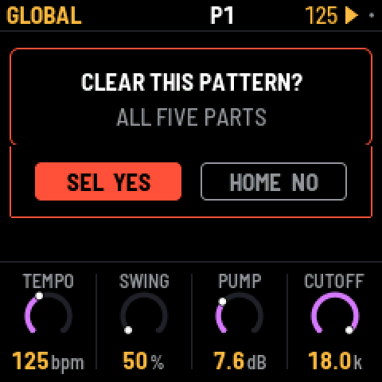
ボタンの働きがわからないときは、そのボタンを単独で 1 秒ほど押さえてください。今いる画面での働きと、その組み合わせがカードで表示されます。離しても何も起こりません。
アンドゥ
HOME を押さえたまま REC を押すと、直前の変更を取り消せます。画面には何を取り消したかが表示されます(例:UNDO 909 P1)。HOME + PLAY でやり直しです。最大 32 ステップまでさかのぼれます(非常に大きな変更の後はより少なくなります)。1 ステップとは、少し手を止めるまでに行った一連の操作のことです。続けて叩いた数ステップ、ノブの 1 回転、録音 1 回分などが 1 ステップになります。アンドゥの対象はサウンド、パターン、ソング、ノブモーションで、CLEAR PATTERN や FACTORY RESET さえも取り消せますが、テンポと設定は対象外です。履歴は電源を切ると消えます。
キーライトの表示
キーライトには明るさが 2 段階あります。オンまたは選択中のものは明るく、選択できる状態のものは薄暗く点灯します。
| 画面 | 明 | 暗 |
|---|---|---|
| HOME | 再生中のパターン(切り替えを予約したパターンは点滅);再生中のパート | ノートがあるパターン;ミュート中のパート |
| SONG | 現在小節のパターン;現在小節で鳴っているパート | ノートがあるパターン;現在小節でミュート中のパート |
| 909 / 808 | 選択中トラックのヒット;選択中トラック | ヒットのある他のトラック |
| 303 | ノート | タイ |
| 303(REC オン) | 押さえている鍵 | 位置の目印になる C の鍵 |
| BREAK | ブレイクが鳴るステップ | スライスパッド 1〜8 |
| ミキサー(PARTS、909 MIX、808 MIX) | ノブが操作対象にしているチャンネル(ミュート中は点滅) | 他のチャンネル |
4画面
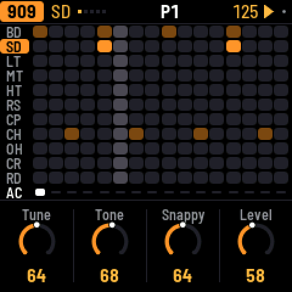
最上行には、左から順に:
- パートがそれぞれの色で表示されます(909 はオレンジ、808 は赤、303A は緑、303B は青、BREAK は紫)。サウンド画面以外では画面名も表示されます。SEQ、TB-3PO、303 のキーボードがオンのときは KEYS。
- 再生中のパターン(例:
P3)。P3 >5は次にパターン 5 が来ることを示します。16 ステップより長いパートでは、白鍵が表示しているステップ範囲が続いて表示されます(33-48 など)。 - テンポ。外部 MIDI クロックに同期している間はアンバー(琥珀色)で表示されます。
- 再生中は再生マーク、録音中は赤い点。小さな灰色の点は未保存の変更があることを示します。
ボタンが何らかの操作を行うと、最上行にその内容が 1 秒ほど表示されます。たとえば SAVED や P1 PASTED TO P5 のように。
ノブは「誰の設定か」を示すタグの下に並びます。選択中トラック(BD)、マシン全体(909 KIT)、303 のサウンド(303A TONE)、パターン(P3 SEQUENCE)、ミキサー(PARTS: 303A、909 MIX: CP)、SEQ で押さえている 303 のステップ(303A STEP 5)、Pロック(BD P-LOCK STEP 5)などです。セクションに複数ページがある場合、タグにページ数が表示され(BD (1/2) など)、行末の点はその画面の全ページで、現在のページが点灯します。選択肢の少ない設定は、リング(円形ダイヤル表示)の代わりに小さな四角の列で表示されます。
ノブを回すと、その値が 1 秒ほど大きな文字で表示されます。「誰の設定か」も一緒です。トラックのもの(BD TUNE)か、パターンのもの(P3 LENGTH)か。パターンに属する設定はパターンの切り替えとともに変わり、パターンのコピーでも一緒にコピーされます。サウンドはどのパターンを再生していても変わりません。
画面の一番下にあるフッターは、この画面での鍵盤の役割を示します(BLACK: TRACK、WHITE: STEP など)。最初にボタンを押すまでの間は HOLD ANY BUTTON: WHAT IT DOES と表示されます。
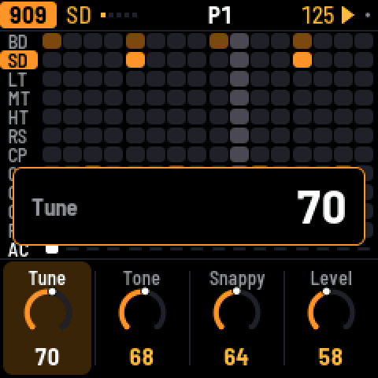
5909 と 808
各ドラムマシンには 11 のトラックがあり、黒鍵 1 つに 1 つずつ割り当てられています。
| 鍵 | 909 | 808 |
|---|---|---|
| 1 | バスドラム(BD) | バスドラム(BD) |
| 2 | スネア(SD) | スネア(SD) |
| 3–5 | ロー・ミッド・ハイタム | ロー・ミッド・ハイタム、またはコンガ |
| 6 | リムショット(RS) | リムショット、またはクラベス |
| 7 | クラップ(CP) | クラップ、またはマラカス |
| 8 | クローズドハット(CH) | カウベル(CB) |
| 9 | オープンハット(OH) | シンバル(CY) |
| 10 | クラッシュ(CR) | オープンハット(OH) |
| 11 | ライド(RD) | クローズドハット(CH) |
909 のハットとシンバルは、元の機材と同じくサンプル音源です。両マシンのその他の音はすべてシンセシスで作られています。808 ではトラックの SOUND 設定で、タムとコンガ、リムショットとクラベス、クラップとマラカスを切り替えます。どちらのマシンでも、クローズドハットはオープンハットを打ち切ります。
ビートの打ち込み。黒鍵を押してトラックを選びます。パターン停止中は音も鳴ります。(再生中は選んでも鳴らないため、うっかりヒットを足すことがありません。GLO > KEY SOUND = ALWAYS でこの動作を変えられます。)次に白鍵を押します。空のステップはオンになり、オンのステップをタップするとオフになります。白鍵を押しながら ENV を押さえると、代わりにアクセントが付きます。アクセントのあるステップではすべてのドラムが大きく鳴ります。
パターンは最大 64 ステップの長さにできます。白鍵には一度に 16 ステップが表示され、OCT+ で次の 16 へ、OCT- で前に戻ります。現在の範囲は最上行に表示されます。
トラックのミュート:HOME を押さえたままそのトラックの黒鍵を押します。もう一度押すと解除です。ミュートされたトラックの行は灰色になります。トラック単位のミュートは保存されず、HOME でパート全体をミュートしてもトラック単位のミュート状態はそのままです。
ページ構成。EDIT には選択中トラックのサウンドが表示されます(1 ページ。909 のキックのみ 2 ページ)。続いて KIT に ACCENT、つまりアクセント付きステップがどれだけ大きく鳴るかの設定があります。トラックの DRIVE と DIST は SEL のリストの MORE にあります。SEQ にはマシン全体の LENGTH と RATE があります。SWING は HOME にあります。すべてのパートにスイングがかかるためです。
各トラックのレベル、パン、リバーブ/ディレイセンドはミキサーにあります。LFO を押して 909 MIX か 808 MIX を開くと、11 トラックすべてのレベルが一度に見えます。黒鍵でトラックを選び、ノブでその LEVEL、PAN、REV、DLY を設定します。808 の切り替え音(コンガなど)は元のトラックのパンを共有するため、コンガはタムと同じ位置に鳴ります。
6303A と 303B
同じ仕様の 303 が 2 台あります。それぞれが独自のサウンドと独自のラインを持ちます。

ステップ。白鍵を押すとそのステップがオンになり、もう一度タップするとオフになります。ステップを編集するには SEQ を押し、そのステップの鍵を押さえたままノブを回します。KNOB 1 でノート、KNOB 2 でゲート(REST=休符、NOTE=ノート、TIE=タイ)、KNOB 3 でアクセント、KNOB 4 でスライドを設定します。OCT- と OCT+ で、押さえているノートが 1 オクターブ移動します。空のステップは押した瞬間にオンになるので、「押す → 押さえる → ノートを設定」を一気に行えます。スライドは、このステップのノートから次のステップのノートへ滑らかに移ります。(EDIT でステップを押さえると、代わりにそのステップ専用のサウンドが設定できます。セクション 11 の「Pロック」を参照。)
タイは直前のノートをこのステップを通して保持し、ノートを鳴り直しません。画面ではタイが付いたノートは、保持しているノートと 1 本の長いバーでつながって表示されます。タイの上で KNOB 1 を回すと、独立したノートになります。
キーボード。REC を押すと 27 鍵すべてがキーボードになります(最上行に KEYS と表示)。演奏したノートは書き込まれます。パターン停止中は 1 ステップずつ、再生中はリアルタイムに入ります。OCT- と OCT+ でオクターブを変えられます。ある鍵を押さえたまま別の鍵を弾くと、303 がその間をスライドします。もう一度 REC を押すとステップ編集に戻ります。
フリープレイ。何も書き込まずに 303 を演奏するには、SEQ を押して SELECT で KEYS ページへ切り替え、FREE PLAY を ON にします。すると 303 のどの画面でも、停止中・再生中を問わず鍵盤で 303 を弾けるので、ラインを試しながら EDIT のノブを回せます。最上行には FREE PLAY と表示されます。REC を押すまで何も書き込まれず、押せば上記のとおりに録音されます。ステップ入力に戻すには FREE PLAY を OFF にします。この設定は各 303 に独立して保持され、電源投入時はどちらもオフです。
ページ構成。EDIT には TONE(CUTOFF、RESO、ENVMOD、DECAY)と VOICE(ACCENT、WAVE ののこぎり波/矩形波、DRIVE、SLIDE タイム)があります。TUNE、VOLUME、DRIVE TYPE(off、soft、RAT)、ACCENT DECAY は SEL のリストにあります。SEQ にはラインの LENGTH(1〜64 ステップ)、RATE、DIRECTION(順方向、逆方向、ピンポン、ランダム)、TRANSPOSE があります。各 303 のレベル、パン、センドはミキサー(LFO)にあります。
7TB-3PO
TB-3PO は 303 のラインを自動生成します。ALGORITHM で 303 を選んで ARP を押してください。
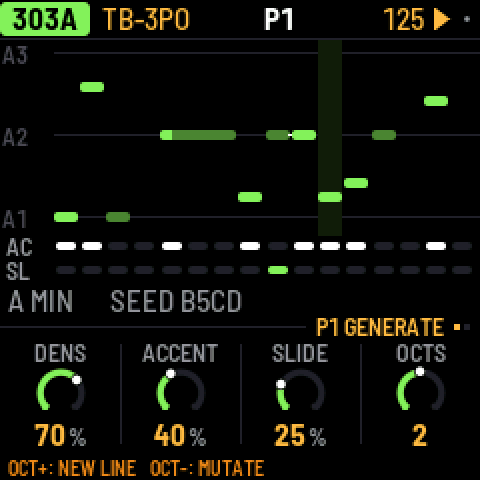
OCT+ を押すと完全に新しいラインを書き込み、OCT- を押すと現在のラインを変異させます(約 4 分の 1 のステップが変わります)。
TB-3PO には 2 つのページがあります(ARP をもう一度押すか、SELECT を回します)。
- GENERATE:DENS、ACCENT、SLIDE で、鳴るステップの数、アクセントの数、スライドの数を設定します。OCTS は音域を 1〜3 オクターブで設定します。
- SCALE:ROOT、SCALE(マイナー、フリジアン、ハーモニックマイナー、マイナーペンタトニック、ドリアン、メジャー)、OCTAVE、そして MUTATE。MUTATE は 1〜16 小節ごとに(または「変異なし」で)ラインを自動で変異させ続けます。
これらのノブは今鳴っているラインを変えません。次に OCT+ または OCT- を押したときの条件を設定するものです。押すまでの間、ラインは手編集を含めてそのまま保たれます。ノブの設定とラインの内容が一致しなくなると、画面に NEW LINE と星印が表示されます。同じ設定とシードは常に同じラインを生成します。Schwung の TB-3PO モジュールが書くラインと同じものです。
ラインを手で編集するには SEQ を、サウンドを形作るには EDIT を押します。
8ブレイク
ブレイクは 8 つのスライスに切ったドラムループで、X0X が再生しながら組み替えていきます。
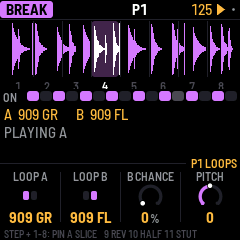
ステップ。白鍵は 1 小節の 16 ステップです。押すとその位置でブレイクが鳴り、もう一度タップすると止まります。
スライスを演奏する。黒鍵 1〜8 を押さえると、そのスライスを自分で鳴らせます。離すと再びジェネレーターに制御が戻ります。鍵 9 を押さえると逆再生、鍵 10 で半速、鍵 11 でスタッター(同じ場所のリピート)します。
ステップ専用スライス。白鍵を押さえたまま黒鍵 1〜8 を押すと、そのステップは常にループ A のそのスライスを先頭から再生するようになり、ステップの枠にスライス番号が表示されます。(ステップを押さえたまま)同じ黒鍵をもう一度押すと、ジェネレーターに制御を返します。これでキックとスネアを好きな位置に固定し、残りはジェネレーターに任せることができます。
ジェネレーター。SEQ に GROOVE と RETRIG の 2 ページがあります。
- COMPLEXITY:次のスライスをそのまま鳴らす代わりに、別のスライスへ飛ぶ頻度。これが「量」の設定です。0 ではループがそのまま鳴り、ROLL と FILL もそれに応じて効きます。25% からフルに効き始めるため、低めの設定ならループに近いまま保てます。
- ANCHOR:キックとスネアのスライスを 1 拍目と 3 拍目に保持する強さ。
- ROLL:スライスを繰り返したり、隣のスライスへ移ったりする頻度。
- FILL:フレーズの最後の小節で、これらのルールをどれだけ崩すか。
- RETRIG 2X、3X、4X、8X:各小節で、どこかの 1 拍がそのレートでスタッターする確率。
SEL のリスト:PHRASE(フレーズの長さ。2、4、8、16 小節、またはオフ)、A LENGTH と B LENGTH(新しいスライスを選び直す頻度。1/4 小節から 8 小節ごと)。
ループ。EDIT には LOOP A、LOOP B、B CHANCE(フレーズの最後の小節でループ B に切り替わる確率。PHRASE オフ時はどの小節でも)と PITCH があります。もう一度 EDIT を押すと FILTER と LEVEL になります。FILTER は 1 ノブ式で、中央が OFF、左へ回すとローパス、右へ回すとハイパスです。ハイパスにするとループのハットが残り、キックとスネアは 909 や 808 に任せられます。ループはテンポに合わせて速くまたは遅く再生されるため、サンプラーと同じくピッチもテンポに追従します。PITCH はそれにさらに加算します。X0X には独自のループが 2 つ付属します。909 GR と 909 FL で、付属の 909 で鳴らしたものです。アップロードしたループはその後に並びます。
これらすべて、ステップとスライスとループはパターンと一緒に保存されます。ブレイクのレベル、パン、センドはミキサーの PARTS ページ(LFO、黒鍵 5)にあります。
自分のブレイクを読み込む
自分のループはブレイクループページから読み込めます。Chrome か Edge で、FM-1 を接続して開いてください。ループは X0X のループの後に BR1、BR2 という名前で並びます。合計で約 21 秒、1 小節のループなら 9 本ほど入ります。
コマンドラインから
FM-1 を接続した状態で実行します:
python3 tools/upload_breaks.py --bars amen.wav think.wav funky.wav ...--bars を付けると各ファイルの 1 小節分だけが送られます。付けない場合はファイル全体が送られます。この操作は既存のループをすべて置き換えます。--dry-run FOLDER は FM-1 なしで、何が入るかを確認できます。schwung-breakbeat が X0X の隣にあれば、--bbgen で BB Gen の定番ブレイクを送れます。ループをファームウェア自体に組み込む方法は BUILDING.md を参照してください。
9パターン
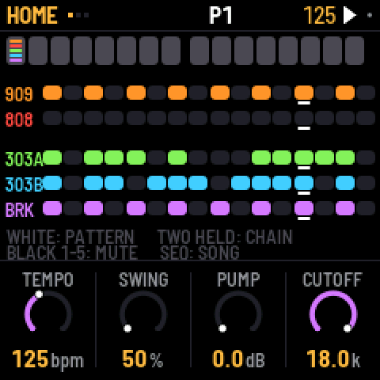
パターンは 32 個あります。1 つのパターンには、各パートのステップ、長さ、レート、ブレイクの設定、スイング、そしてノブモーション、Pロック、確率がすべて含まれます。サウンド、エフェクト、マスターの設定はパターンの一部ではないため、パターンが変わっても変化しません。
各パートはそれぞれのパターンを演奏します。ドラムがパターン 7 を鳴らしている間に、303 たちがパターン 3 を鳴らすということもできます。
HOME にはパターン 1〜16 が枠(ボックス)で表示され、1 つの白鍵に 1 つずつ対応します。OCT+ で 17〜32 が表示され(枠の下に P17-32 と出ます)、OCT- で戻ります。4 つごとに番号が付いています。各枠の中には、そのパターンにノートを持つパートの行が表示されます。そのパートが今そのパターンを演奏していれば明るく、そうでなければ薄暗く表示されます。
パターンの選択
- 5 パートすべて:HOME で白鍵を押すか PRESETS を回します。他の画面からは、HOME を押さえたまま白鍵を押します。
- 1 パートだけ:そのパートの画面(SEQ、EDIT、TB-3PO)で PRESETS を回します。
- チェーン:HOME で白鍵を 2 つ同時に押さえます。5 パートすべてが、最初のパターンから 2 番目のパターンまでを 1 小節ずつ順に演奏し、また最初に戻ります。単一のパターンを選ぶとチェーンは解除されます。
再生中は現在の小節が終わった時点で新しいパターンが始まり、停止中はすぐに切り替わります。パターンが変わったパートはステップ 1 から再生し直し、他のパートはそのまま演奏を続けます。
コピーと貼り付け。SAVE を押さえると最上行に P1 COPIED と表示されます。白鍵を押すとそのパターンへ貼り付きます(P1 PASTED TO P2)。5 パートすべてが、今演奏している状態のままコピーされます。貼り付け先のパターンにノートがある場合は、先に確認があります。SAVE を押さえている間、OCT- と OCT+ でパターン 1〜16 と 17〜32 を切り替えられます。
クリア。SAVE を押さえたまま REC を押すと、選択中パートの分をそのパターンから消せます。GLO > CLEAR PATTERN で 5 パートすべてを消せます。
ミュート。HOME では黒鍵 1〜5 でパートをミュート/解除します。ミュートは保存されません。ただしソングの中は例外です。
長さとスイング。パートごとに長さを変えられるので、パート同士が少しずつずれて重なっていきます。小節の長さは 909 の長さで決まり、スイングは 909 のパターンに保持され、すべてのパートにかかります。スイングは 16 分音符を 1 つおきに遅らせます。50% がストレート、75% が最大です。
HOME のノブはライブ演奏用です。TEMPO、SWING、そしてマスターの FILTER と PUMP です。
タップテンポ。どの画面からでも、HOME を押さえたまま SEQ をビートに合わせて叩くとテンポを入力できます。再生中・停止中どちらでも。3 回続けて叩いた時点でテンポが設定され、叩き続けると直近 4 回のタップに追従します。1〜2 回では何も変わらないので、誤って押しても影響ありません。2 秒間間を空けると最初からやり直しです。再生中は 3 回目以降、叩くたびにビートがタップのタイミングに移動します。全パートが直近の 4 分音符へジャンプし、そこから演奏を続けます。わずかに遅れたタップは直前に通過した拍へ戻り、わずかに早いタップは次に来る拍へ進みます。小節の区切りの直前ならタップで小節が終わり、次のパターンやソングの次の小節が入ってきます。結果は TEMPO 表示に出ます。X0X が外部 MIDI クロックに同期している間はクロックがテンポを決めるため、タップは何もしません。
10録音
REC を押すと録音がオンになり、もう一度押すとオフになります。
- ドラム:パターンの再生中に黒鍵を押すとヒットが記録されます(REC オン中は常に音が鳴ります)。ENV を押さえるとアクセント付きで記録されます。
- 303(リアルタイム):REC オンで 303 の鍵盤がキーボードになります。パターンの再生中に演奏します。
- 303(ステップ入力):REC オンでパターン停止中は、押した鍵がステップ 1 から順に次のステップへ入っていきます。鍵を押しながら ENV でアクセント、LFO でスライドを付けます。休符は ENV を押さえながら OCT- か OCT+、タイは LFO を押さえながら OCT- か OCT+ で入力します。
- ノブの動き:REC オンでパターン再生中に、サウンドのノブを回します(セクション 11)。
- ソング:SONG 画面で REC + PLAY(セクション 12)。
11ノブモーション、Pロック、確率
この 3 つはどれもステップに固有の値を持たせる機能で、すべてパターンと一緒に保存されます。
ノブモーション
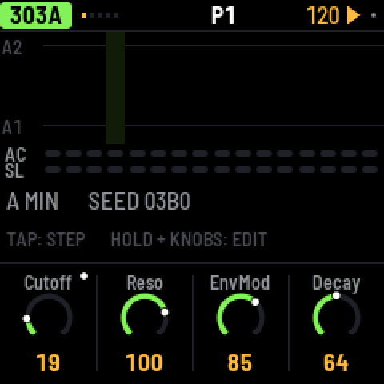
REC をオンにして PLAY を押し、サウンドのノブを回します。X0X は動かしたステップ位置にノブの値を記録し、短い空白は補間するので、ゆっくりのスイープでも途切れません。再生時はステップからステップへ滑らかに移ります。
- モーションが記録されたノブは表示の隅に点が付き、再生に合わせてリングが記録どおりに動きます。
- 触れなかったステップでは、ノブ本来の設定値で鳴ります。
- REC を付けずにノブを回すと、パターン 1 周の間だけ手動の値が優先され、その後は記録されたモーションが再び再生されます。
- ノブのモーションを消すには、SAVE を押さえたままそのノブを回します。
- モーションはパートのパターンに属します。303 のノブは 303 のパターンに、エフェクトとマスターのノブは 909 のパターンに記録されます。パターンのコピー・クリアでは、モーションも一緒にコピー・クリアされます。
- 停止すると、すべてのノブは本来の設定に戻ります。
Pロック
1 つのステップだけに専用のサウンドを持たせられます。キックの 1 発だけチューンを高く、303 の 1 音だけフィルターを開く、ブレイクの 1 ステップだけピッチを上げる、といった具合です。
- EDIT でオンのステップを押さえたままサウンドのノブを回します。そのステップだけ新しい値で鳴り、他のステップはノブの設定値のままです。ステップを押さえている間、ノブの行には
P-LOCK STEP 5と表示され、ノブはそのステップの値を示し、ロックされたノブにはアンバーの点が付きます。停止中でも、ステップを押さえている間はロックの音が聞けます。 - タップは従来どおりステップのオン/オフです。ロックを作るのは「押さえる + ノブを回す」の組み合わせだけです。空のステップは押した瞬間にオンになるので、押して押さえてロックまで一気に行えます。
- 1 つのロックを消すには、ステップを押さえたまま SAVE も押さえて、そのノブを回します。
- SEQ でステップを押さえてもロックは作られません(303 では代わりに、そのステップのノートをノブで設定します)。
確率
ステップ(SEQ か EDIT で)を押さえたまま SELECT を回すと、そのステップが鳴る確率を 100% から 5% まで 5% 刻みで設定できます。最上行に表示されます(STEP 5: 50% など)。サイコロはステップが回ってくるたびに振られるので、50% ならだいたい 1 回おきに鳴ります。
5% の先まで回し続けるとサイクルになります。1:2、2:2、1:3 … と 8:8 まで続きます。1:4 のステップはそのパートのパターン 4 周のうち 1 周目にだけ鳴り、2:4 なら 2 周目に鳴ります。ランダム性はありません。各パートは自分の周回数を数えていて、PLAY を押すかパターンが変わるたびに 1 に戻ります。
- 909 と 808 では確率は選択中トラックのステップに属するので、同じステップのキックとハットにそれぞれ別の確率を設定できます。
- 303 でスキップされたステップは休符になります。ブレイクでは、スキップされたステップは発火しません。
- スキップされたドラムヒットは MIDI ノートを送りません。
知っておくと良いこと
- Pロックや 100% 未満の確率を持つステップは、ステップグリッドに小さな刻み目が付きます。
- Pロックと確率は記録されたモーションと同じ方式で保存され、パートパターンごとにロックした設定 1 つにつき 1 つの「ノブ」スロットを使います。全パターン合計で 160 個まで入り、いっぱいになると最上行に
MOTION FULLと表示されます。 - 隣り合う 2 つのロックされたステップは、録音したモーションと同じように、一方の値から他方の値へ滑らかに移ります。
12ソング
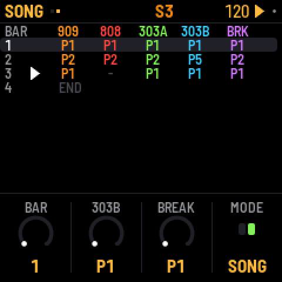
ソングは最大 192 小節のリストです。各小節には、各パートがどのパターンを演奏し、どのパートがミュートされているかが書かれています。ソングを開くには HOME を 2 回押します(もう一度 HOME でパターン画面に戻ります)。
- 小節を書く:白鍵を押します。選択中の小節に 5 パートすべてがそのパターンになり、次の小節が選択されます。ソングの終わりで鍵を押すと新しい小節が追加されていきます。
- 小節を編集する:KNOB 1 で小節を選び、他のノブでその小節の各パートのパターンを設定します。
- 小節内のパートをミュートする:黒鍵 1〜5 を押します。
- 小節を繰り返す:SONG 画面の 2 ページ目(SELECT を回す)で、REPEAT により選択中の小節を最大 8 回繰り返せます(行末に x2 … x8 と表示されます)。同じパターンの 4 小節分が 1 行になります。
- ソングを再生する:SONG 画面で PLAY を押します。ソングは選択中の小節から始まり、ループします。止めるまで、どの画面へ移動しても(HOME でミュート、EDIT でサウンド)演奏を続けます。再生中、最上行には S と現在の小節番号が表示されます。他の画面で PLAY を押した場合はパターンを演奏します。どちらになるかは PLAY を押した画面で決まり、最上行にどちらか(S または P)が表示されます。
- ソングを録音する:SONG 画面で REC をオンにして PLAY を押します。再生しながら、パターンを変えたりパートをミュートしたりと自由に操作します。開始した小節から、小節が経過するたびにソングへ書き込まれ、終わりを超えて演奏するとソングが伸びていきます。録音は、それまでその小節にあった内容を上書きします。
SONG 画面で SEL を押すと、LENGTH、INSERT BAR、DELETE BAR、CLEAR SONG があります。
13エフェクト
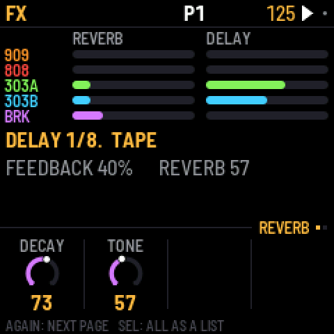
リバーブとディレイがそれぞれ 1 系統あり、すべてのパートが両方にセンドできます。パートごとのセンドはミキサーの PARTS ページ(LFO)に、各ドラムトラックのセンドは 909 MIX と 808 MIX にあります。FX には各パートのセンド量が表示され、2 つのページがあります。
- REVERB:DECAY と TONE。リバーブは滑らかなステレオリバーブで、送った音はワイドに戻ってきます。
- DELAY:TIME(1/32 から付点 2 分音符までの音符の長さ)、FEEDBACK、TONE、TAPE。TAPE を一番左(DIGI)にすると、クリーンな 12 ビットデジタルディレイになります。上げていくとテープディレイになり、回すほど揺れ・サチュレーション・劣化が深まり、フィードバックを高くすると自己発振することもあります。
SEL のリストの MORE:各エフェクトのローカットとリターンレベル、そして PING WIDTH。PING WIDTH はエコーを左右に往復させます。0 でオフ、127 でエコーがハードに左右へ振り分けられ、中間の値では左右が寄って鳴ります。新しいプロジェクトの初期値は 20(狭い往復)です。
14ミックスとマスター
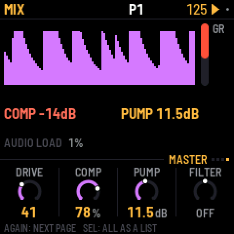
LFO を押すとミキサーが開きます。もう一度押すか SELECT を回すと、4 つのページを切り替えられます。右側の赤いバーはコンプレッサーのゲインリダクションです。
- PARTS:各パートのレベルとメーター。黒鍵 1〜5 で 909、808、303A、303B、ブレイクを選びます。ノブはその LEVEL、PAN、REV、DLY です。
- 909 MIX と 808 MIX:各ドラムマシン専用のミキサーで、全トラックのレベルがひと目でわかります。黒鍵でトラックを選び、ノブでその LEVEL、PAN、REV、DLY を設定します。
- MASTER:ミックス全体に効く 4 つのノブ。画面には直近数秒の出力レベルが表示され、ポンプやコンプレッサーの動きが見えます。
PARTS、909 MIX、808 MIX では、HOME を押さえたまま黒鍵を押すと、そのチャンネルのミュート/解除ができます(PARTS ではパート、ドラムページではトラック)。キーライトに表示されます。ノブが操作対象にしているチャンネルは明るく点灯し(ミュート中は点滅)、他は薄暗く、ミュートされたものは消灯します。
ミキサー画面で ALGORITHM を回すと、そのパートのページへ移ります。ドラムマシンなら 909 MIX か 808 MIX、303 とブレイクなら PARTS(そのパートを選択した状態)です。
| MASTER | 働き |
|---|---|
| DRIVE | ミックス全体をサチュレートさせます(909 のドライブ段)。 |
| COMP | コンプレッサーを 1 ノブにまとめたもの:0 でオフ。上げるほどスレッショルドが下がり、レシオが上がり、メイクアップゲインが同時に加わります。4 分の 3 が工場出荷時のハードな絞り(-24 dB から 4:1、+16 dB)です。 |
| PUMP | キックが鳴るたびにミックス全体を最大 24 dB 下げて、また膨らませます。ビッグビートの「呼吸」です。アクセント付きのキックは強くポンプします。COMP が 0 でも、キックがミュートされていても働くので、鳴っていないキックでドライブさせることもできます。どのキックを使うかは SEL のリストの PUMP BY で設定します(909 のキック、808 のキック、または両方)。 |
| FILTER | 1 ノブ式:中央でオフ。左に回すとローパスが閉じていき、右に回すとハイパスが開いていきます。 |
FILTER と PUMP は HOME の PERFORM ページにもあり、ライブ演奏で使えます。
工場出荷時のミックスはビッグビート向けに設定されています。手前にブレイク、その下に 909 のキック、303 は RAT ディストーションを通してテープディレイへ、クラップにはリバーブ。クリーンなミックスにしたいときは、COMP と PUMP を 0 にします。
マスターの詳細
SEL のリストの MORE:コンプレッサーの THRESH(-48〜0 dB)、RATIO(1:1〜20:1 と INF)、ATTACK(0.1〜100 ms)、RELEASE(10〜1500 ms)、MAKEUP(0〜24 dB)、MIX(ドライ〜フル圧縮。パラレル圧縮用)。PUMP BY(909 のキック、808 のキック、または両方)。フィルターの RESO。クリッピングを防ぐ LIMIT(オンのままにしておいてください)。ドライブ段の DIST タイプ、GLUE コンプレッサー、VOLUME。COMP や FILTER を回すと、その詳細設定も一緒に変わります。
15設定と保存
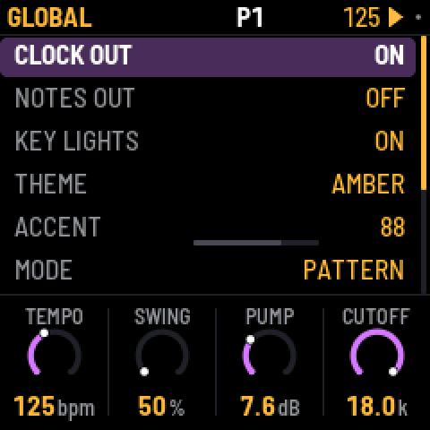
GLO を押すとこれらの設定があります。5 つのセクション(MIDI、AUDIO、KEYS AND SCREEN、PROJECT、SYSTEM)に分かれています。
| 設定 | 働き |
|---|---|
| CLOCK OUT | MIDI クロックとスタート/ストップメッセージを送ります。 |
| NOTES OUT | パターンを MIDI ノートとして送出します。 |
| 909 … BREAK MIDI CH | 各パートの MIDI チャンネル。ノートと CC の入出力に使います。1〜16。OFF にするとそのパートへの受信ノートと CC を無視し、送信もしなくなります。 |
| CC OUT | OFF(デフォルト):CC は送信しません。KNOBS:手で回したノブが CC として送出されます。ALL:ノブモーションや Pロックが再生する値も送出されます。詳細はセクション 16 を参照。 |
| MIX MIDI CH | ミキサーのレベル、エフェクト、マスター用のチャンネル:1(デフォルト)〜16、または OFF。 |
| OUTPUT | NORMAL、または LOUD。LOUD はヘッドホンとライン出力(と USB オーディオ)が 6 dB 大きくなります。音量の足りないヘッドホン用です。マスターの LIMIT(デフォルトでオン)がクリッピングを防ぎます。 |
| USB AUDIO | FOLLOWS KNOB(デフォルト):USB オーディオの音量が FM-1 本体と一致します。MASTER ノブも含みます。FULL:ノブの位置にかかわらず USB オーディオはフルレベルのままなので、本体の音量を絞ったままケーブル経由で録音できます。 |
| LIGHTS | ON:キーライトがステップを表示し、消灯しているボタンも薄く光って読めるようになります。KEYS:キーライトのみ。OFF:どちらもなし。 |
| KEY SOUND | STOPPED(デフォルト):パターン再生中は、ドラムを選んでも 303 のステップを編集しても音が鳴りません。ただし REC オン中は鳴ります。ALWAYS:常に音が鳴ります。いずれの場合も 303 のキーボードは常に鳴ります。 |
| THEME | 画面の色:グリーン、アンバー、シアン、レッド、モノクロ。 |
| SAVE PROJECT | すべて保存します。 |
| AUTOSAVE | ON(デフォルト):パターン停止中、4 秒間何も操作しなければ変更が自動保存されます。OFF:SAVE を押したときだけ保存します。 |
| CLEAR PATTERN | 現在のパターンの 5 パートすべてをクリアします。 |
| FACTORY RESET | 工場出荷時のサウンドと空のパターンに戻ります。ソングもノブモーションもありません。保存済みのプロジェクトは、上書き保存するまで残ります。 |
| PERFORMANCE | パフォーマンスページ(後述)を開きます。 |
| 2ND CORE | ON(デフォルト):FM-1 のプロセッサーコアを両方使います。OFF:1 コアで動きます。次回の電源投入時に反映されます。2 コアでクラッシュした場合、X0X が自動で OFF にします(下記のパフォーマンスページを参照)。 |
| ABOUT X0X | バージョン、パターン用メモリーの使用率(MEM)、オーディオ負荷を表示します。 |
| BATTERY | バッテリー残量:FULL、2/3、1/3、EMPTY。パソコンが FM-1 に給電している間は USB POWER。表示のみで変更できません。 |
保存
SAVE はサウンド、32 パターンすべて、ソング、ノブモーション、テンポ、設定を保存します。画面右上の小さな灰色の点は未保存の変更があることを意味し、未保存のものは電源を切ると失われます。
AUTOSAVE がオン(デフォルト)なら SAVE を使うことはほぼありません。パターン停止中に 4 秒間何も触れていなければ、X0X が自動で保存して AUTOSAVED と表示します。
X0X は再生中に保存することはありません。保存の間、サウンドが一瞬止まります(FM-1 は保存先と同じメモリーから再生しているため)。そのため再生中に SAVE を押すと SAVES WHEN STOPPED と表示され、停止したときに保存します。
収容容量
X0X はパターン、ソング、ノブモーションを、FM-1 のメモリーに収まるよう圧縮しています。空のステップはほとんど場所を取らないので、典型的なプロジェクトではメモリーのほんの一部しか使いません(使用率は GLO > ABOUT X0X に MEM として表示されます)。プロジェクトが大きすぎて入らなくなった場合は MEMORY FULL: NOT SAVED と表示され、以前の保存内容が保持されます。要らないパターンをクリアすれば場所が空きます。旧バージョンで保存されたプロジェクトはそのままの形で読み込まれます(ステップは 1〜32、パターンは 1〜16)。
パフォーマンス:FM-1 の働き具合
GLO > PERFORMANCE には FM-1 の働き具合が 1 秒ごとに更新されて表示されます。オーディオ負荷とそのピーク、音切れ(ドロップアウト)の有無、各パートのプロセッサー使用率です。
きちんと計測するには、SEL を押して RUN PERF TEST を選びます。X0X が自前の 3 つのパターンを 15 秒ほど再生します。シンプルなループから、最も混み合った状態までです。終わるとプロジェクトは元どおりに戻り、結果が表示されます。HOME か PLAY でテストを途中で止められます。
X0X は FM-1 のプロセッサーコアを両方使います。808 とブレイクは 2 基目で動くため、パフォーマンスページの 808 の割合は「1 基目が 2 基目を待つ時間」を示し、全体の負荷は下がります。ある FM-1 では、テストの 3 パターンが 1 コア動作時の 43%、83%、115% から 39%、54%、68% になり、最悪ケースのピークも限界超過から 84% になりました。
パフォーマンスページの右上には 2 CORES と表示されます。一部の FM-1 では 2 基目のコアの負荷が正しく読めないことがあり、X0X は初回にそれを検知して 1 コアで動き続け、ページには赤字で 1 CORE: BAD READS と表示されます。動作自体はすべて正常ですが、最も混み合ったパターンでは音切れするかもしれません。
2 コア動作中に X0X がクラッシュすると、1 コアで再起動し、GLO > 2ND CORE を OFF にして同じクラッシュを繰り返さないようにします。このときページには 1 CORE (GLO) と表示されます。再び 2 コアを試すには、2ND CORE を ON にして FM-1 の電源を入れ直します。起動中にクラッシュした場合も、X0X は(その 1 回だけ)1 コアで起動します。
コア表示の下には、X0X がプロセッサーの 2 つの電源に与えている電圧が表示されます。1.38 / 1.60V で、M-VAVE 純正ファームウェアと同じです。FM-1 のブートローダーはこれより低い 1.26 / 1.40V で起動しますが、その電圧では、2 コアが忙しく動いているときにメモリーを誤読する FM-1 があります。
FM-1 が限界に近づくと、X0X は音切れを起こす代わりに自分で負荷を軽くします。303 がオーバーサンプリングをやめ(明るくレゾナンスの強いノートがわずかにザラつきます)、808 の音はフェードの終わりが少し早くなります。この状態では、オーディオ負荷の横に GUARD がアンバーで点灯し、3 秒静かになると消えます。パフォーマンスページには発動した回数が記録されます(GUARD 3x など)。
自分のパターンで X0X が音切れする場合は、テスト結果とパターンの写真を送ってもらえると最も役立ちます。
X0X がクラッシュすると、数秒間赤い画面を表示して再起動します。FM-1 の電源を切るまで、パフォーマンスページの下部にはそのクラッシュの数値が赤字で残ります(CRASH PC … RA …、EMU … DBG …)。クラッシュを報告するときは、この数値の写真を添えるのが最も役立ちます。
KNOB 1 で追加のカウンター(STALLS)がオンになります。実験的なものです。オンにして FM-1 の調子がおかしくなったら、電源を入れ直してください。
プロジェクトのバックアップ
X0X が保持できるプロジェクトは 1 つです。複数を残したいときや、他のファームウェアを試す間自分のプロジェクトを退避しておきたいときは、パソコン上のファイルに保存し、後で読み込み直せます。Chrome か Edge でバックアップページを開き、FM-1 を USB で接続してください。
- バックアップ:Back up を押します。プロジェクトがダウンロードフォルダーに
.x0bファイルとして保存されます。中身はサウンド、32 パターンすべて、ソング、ノブモーション、テンポ、設定です。X0X はそのまま演奏を続けられますが、まだ保存していない変更は、停止したときに初めてファイルへ入ります。 - リストア:X0X を停止し、バックアップを選んで Restore を押します。X0X は何かを変える前にファイル全体を検証します。その後画面に
RESTORE FROM USB?と表示されるので、SEL で復元、HOME で現状維持です。バックアップが FM-1 上のプロジェクトを置き換え、X0X がすぐに読み込みます。
バックアップにはブレイクループは含まれません。WAV ファイルを保管しておき、ブレイクループページから再度読み込んでください。旧バージョンの X0X で作ったバックアップは、新しいバージョンで復元できます。
コマンドラインから
FM-1 を接続した状態で実行します:
python3 tools/x0x_backup.py backup my-song.x0b
python3 tools/x0x_backup.py restore my-song.x0bpython3 tools/x0x_backup.py info my-song.x0b でバックアップの内容を確認できます。ファイル形式はバックアップページのものと同じです。
16MIDI と USB オーディオ
USB で接続すると、FM-1 は「X0X FM-1」という名前の MIDI デバイスとして認識されます。
X0X は USB と FM-1 の TRS MIDI IN ジャックの両方から、同じように MIDI を受け取ります。各パートは自分のチャンネルで待ち受けています。デフォルトは次のとおりです。
| 入力 | 対応 |
|---|---|
| チャンネル 10 | 909。General MIDI のドラムノートに対応:36 キック、38 スネア、41・45・50 タム、37 リム、39 クラップ、42 クローズドハット、46 オープンハット、49 クラッシュ、51 ライド。 |
| チャンネル 11 | 808。同じノートに加えて、カウベルが 56、シンバルが 49。 |
| チャンネル 2 | 303A。重なるノートはスライドし、ベロシティ 100 以上でアクセントが鳴ります。 |
| チャンネル 3 | 303B。同様。 |
| チャンネル 4 | ノート 36〜43 でブレイクのスライス 1〜8 を鳴らします。 |
| クロック | X0X は入力された MIDI クロックに自動で同期し、クロックが止まってから 0.5 秒後に自分のテンポへ戻ります。Start、Stop、Continue でパターンの開始・停止ができます。 |
GLO で各パートのチャンネルを設定できます(909 MIDI CH など)。OFF にすればそのパートのノートを無視できます。たとえば、他の機材が同じチャンネルでノートを送りながらクロックを送ってくるような場合です。X0X は MIDI を送ることもできます。CLOCK OUT がオンならクロックとスタート/ストップ、NOTES OUT がオンなら各パートのチャンネルでパターンをノートとして送ります。
X0X が外部クロックに同期している間、最上行のテンポ表示は約 1 秒の平均になるため、クロックごとにちらつきません。
MIDI CC
MIDI コントローラーから、X0X のノブを MIDI CC で動かせます。各パートはノートと同じ自分のチャンネルで CC を受け取り、MIX MIDI CH(デフォルトはチャンネル 1)がミキサー、エフェクト、マスターを受け持ちます。CC は、表示中のページにかかわらず、ノブを回したのと同じようにそのノブを設定します。再生中に REC がオンだとノブモーションとして記録されます。そうでなければノブを設定し、そのノブにパターンのモーションがある場合は、CC が 1 周の間モーションに勝ります。CC のスイープ(連続変化)はアンドゥ 1 ステップになります。CC マップは固定で、MIDI ラーン(学習)はありません。最初のバンクは CTL-1 と一致しているため、CTL-1 なら設定なしでこれらのノブを動かせます。
パートのチャンネルで受ける CC(909 はチャンネル 10、808 は 11、303A は 2、303B は 3、ブレイクは 4):
| CC | 303A と 303B | 909 と 808 | ブレイク |
|---|---|---|---|
| 7, 10, 91, 93 | そのパートのレベル、パン、リバーブセンド、ディレイセンド | 同じ | 同じ |
| 16–19 | CUTOFF、RESO、ENVMOD、DECAY | 16 FILTER、17 LEVEL、18 PITCH | |
| 20–23 | ACCENT、WAVE、DRIVE、SLIDE | 20〜30:トラック 1〜11 の TUNE | |
| 24–27 | TUNE、VOLUME、DRVTYP、ACCDEC | ||
| 74, 71, 75 | CUTOFF、RESO、DECAY の再割り当て(受信のみ、送信なし) | 74:FILTER の再割り当て | |
| 70–80 | トラック 1〜11 の DECAY | ||
| 102–112 | トラック 1〜11 の LEVEL | ||
| 12 | キットの ACCENT |
ドラムトラックは画面の並び順で数えます。909 では BD、SD、LT、MT、HT、RS、CP、CH、OH、CR、RD、808 では BD、SD、LT、MT、HT、RS、CP、CB、CY、OH、CH です。909 のクラップの DECAY は TAIL のことであり、909 のリムショットには DECAY がないため、チャンネル 10 では CC 75 は何もしません。
MIX MIDI CH で受ける CC:
| CC | 設定対象 |
|---|---|
| 16–19 | MASTER ページ:DRIVE、COMP、PUMP、FILTER(64 がオフ) |
| 74, 71 | マスターの FILTER の再割り当てと、その RESO |
| 20, 21 | リバーブの DECAY と TONE |
| 22–25 | ディレイの TIME、FEEDBACK、TONE、TAPE |
| 102–106 | 909、808、303A、303B、ブレイクのレベル |
WAVE のようなスイッチ系の設定は値 64 で切り替わります。パートのチャンネルの CC 120(オールサウンドオフ)と CC 123(オールノートオフ)は、MIDI がホールドしているノートを解放します。
CC OUT(GLO)がオンのとき、X0X は CC を送信します。KNOBS では、ノブ、SEL のリストの行、ENV + ノブのいずれかで手動で値を変えるたびに、そのノブの CC が送られます。受信した CC は送り返されないため、MIDI をエコーする DAW でもループしません。パートのレベルは 2 回送られます。パートのチャンネルの CC 7 と、MIX MIDI CH の 102〜106 です。ALL ではさらに、ノブモーションと Pロックが再生する値も送られ、X0X のレーンで他のシンセをドライブできます。レーンは 6 ms あたり最大 4 CC しか送らず、ノートの余地が残っている間だけ送るため、混み合ったパターンでも CC のせいでノートが欠けることはありません。ALL では、レーンが直前に送ったのと同じ値で返ってきた CC は無視されます。
プロジェクトの読み込み時と、アンドゥ/リドゥの後には、マップ上の全ノブの値が 1 回ずつ送られるため、LED リング付きのコントローラーでも現在値がそのまま表示されます。
USB オーディオ
同じ USB ケーブルを通して、FM-1 はパソコンに「X0X FM-1」というオーディオ入力としても認識されます。44.1 kHz の 2 チャンネルで、ドライバーのインストールは不要です。ヘッドホンで聞こえている音を、VOLUME を通した後の状態でステレオで届けます。
どのオーディオアプリでも録音でき、ライブモニタリングもできます。FM-1 は USB オーディオをパソコンのクロックに合わせるため、ライブモニタリングでもズレたり音切れしたりしません。アプリが入力を開いた直後の一瞬、FM-1 が安定するまでクリック音が出ることがあります。
スクリーンリーダー
X0X は、自分の画面の内容をスクリーンリーダーに伝えられます。FM-1 を USB で接続し、Chrome か Edge で FM-1 Screen Reader を開いて Connect をクリックしてください。今いるページとそのノブ、回しているノブの値、リストの行とその位置(「clock out on、22 項目中の 1 番」など)、ヘルプカード、確認ダイアログ、オン/オフしたステップ、再生と停止、そしてすべてのメッセージが読み上げられます。機械語風の表記ではなく、言葉に直して伝わる形で読むのが特徴です。「bass drum tune 37」のように読み、「BD TUNE 37」のまま読み上げたりはしません。
ページ自体の音声で、速度とピッチを選んで読み上げさせることも、すべてを自分のスクリーンリーダー(VoiceOver、NVDA、JAWS、TalkBack)に任せることもできます。W を押すと画面全体をもう一度読み上げます。ページが接続するまで FM-1 は何も送らないため、同じケーブルにつながっている DAW がそのデータを見ることはありません。
17トラブルシューティング
アップデートモード:OCT- と OCT+ を同時に 5 秒押さえます。カウントダウンが表示され、終わる前に離すとキャンセルできます。
キャリブレーション:ボタンやノブが正しく動かないときは、FM-1 の電源を入れる際に OCT- と OCT+ を押さえたままにします。画面の案内に従って、各ボタンを押し、各ノブを順に回します。
クラッシュ後:X0X は赤い CRASH 画面を表示し、数秒後に自動で再起動します。次回起動時に RESTARTED AFTER A CRASH とアドレス(PC …)が一瞬表示されます。問題を報告するときは、そのアドレスと操作内容を添えてください。
セーフモード:起動中に 2 回続けてクラッシュすると、代わりに SAFE MODE で起動します。音は出ませんが USB は機能するので、ウェブインストーラーからアクセスできます。X0X を入れ直すか、同じページから純正ファームウェアへ戻してください。PLAY を押すと、通常どおりの X0X 起動を試みます。セーフモードでもさらに 2 回失敗すると、FM-1 はチップ自体のアップデートモードに落ち、下記のレスキューだけが届くようになります。
BRIGHTNESS 変更後に起動画面から動かない場合(0.9-beta 以前)
0.9-beta までのバージョンには、FM-1 をフリーズさせ得る輝度設定があり、設定が保存されるため、再インストール後も毎回の起動でフリーズし続けていました。ウェブインストーラーから 0.10-beta 以降をインストールしてください。この設定は廃止され、保存された値も無視され、FM-1 は正常に起動します。
起動しなくなった FM-1 の復旧
0.5-beta 以降は、クラッシュを繰り返す FM-1 はセーフモード(前述)で起動し、ウェブインストーラーで修復できます。それより前のバージョンは、2 回クラッシュするとチップ自体のアップデートモードに落ちていました(0.2-beta がこれに当たります:X0X 画面 → 赤い X0X CRASH 画面 → 真っ暗な画面)。中断されたインストール(ケーブルが抜けた、パソコンがスリープした)でもこの状態になることがあります。真っ暗な画面で、赤い充電ランプだけが点いている状態です。この状態の FM-1 はウェブインストーラーも M-VAVE のアップデーターも見つけられませんが、スクリプトなら M-VAVE のファームウェアを書き戻せます。Mac で、お手持ちの USB ケーブルだけで行えます。
ターミナルを開き、次の行を貼り付けて Return を押します:
bash -c "$(curl -fsSL https://raw.githubusercontent.com/charlesvestal/fm1-x0x/main/tools/fm1_rescue.sh)"- コマンドライン開発者ツールのインストールを求めるウィンドウが出たら Install をクリックします。終わったら、もう一度同じ行を貼り付けます。
- パスワードを求められたら、Mac のパスワードを入力して(入力中は何も表示されません)Return を押します。
- 待機中と表示されたら、FM-1 を接続して電源を入れます。クラッシュして画面が暗くなり、スクリプトがそれを検知します。スクリプトはチップを確認し、FM-1 のメモリーのバックアップをホームフォルダーの
fm1-rescueフォルダーに保存し、書き込みの前に確認します。 - yes と入力して Return を押します。FM-1 を再起動すると表示されるまで、何も抜かないでください。FM-1 は純正ファームウェアで起動するので、そこから再度 X0X をインストールできます。
このスクリプトは M-VAVE の FM-1 ファームウェア(V16 と、Internet Archive から V15)と JieLi のフラッシュローダーをダウンロードし、両方を既知のフィンガープリントと照合します。FM-1 がすでに持っているブートローダーに合うバージョンを書き戻します。その後 V15 から V16 へ上げるには、M-VAVE の M-UPGRADE を使ってください。書き込むのはメモリーのファームウェア領域だけで、ブートローダーや FM-1 自身の設定には決して触れず、書き込んだものはすべて検証します。再実行も常に安全です。失敗したら、ターミナルウィンドウの内容をすべてコピーして issue を立ててください。FM-1 がまったく認識されない場合でも、Felucca の FM-1-transporter(USB ラインに配線した小さな RP2040 ボード)なら届きます。
18パラメータ
ドラムの設定は 0〜127 の範囲です。ディストーションのタイプである DIST は、DIODE、CLIP、SAT、BFZ、PDIST、FOLD、CRUSH から選べます。PAN は L64 から C(中央)を経て R63 までです。
各トラックの Level、Pan、Rev、Dly はミキサー(909 MIX、808 MIX)にあります。Drive と Dist は SEL のリストに、残りはそのトラックのサウンドページにあります。
909 のトラック
| 909 トラック | 設定 |
|---|---|
| BD | Tune, Attack, Decay, Level, Pitch depth, Pitch, Drive, Dist, Rev, Dly, Pan |
| SD | Tune, Tone, Snappy, Decay, Level, Drive, Dist, Rev, Dly, Pan |
| LT, MT, HT | Tune, Decay, Level, Attack, Drive, Dist, Rev, Dly, Pan |
| RS | Level, Tune, Drive, Dist, Rev, Dly, Pan |
| CP | Level, Tune, Tail, Drive, Dist, Rev, Dly, Pan |
| CH, OH | Decay, Level, Tune, Drive, Dist, Rev, Dly, Pan |
| CR, RD | Tune, Level, Decay, Drive, Dist, Rev, Dly, Pan |
| KIT | Accent(アクセント付きステップの音量増分) |
808 のトラック
| 808 トラック | 設定 |
|---|---|
| BD | Level, Tone, Decay, Tune, Attack, Drive, Dist, Rev, Dly, Pan |
| SD | Level, Tone, Snappy, Tune, Decay, Drive, Dist, Rev, Dly, Pan |
| LT, MT, HT | Level, Tune, Decay, Sound, Drive, Dist, Rev, Dly, Pan |
| RS | Level, Tune, Decay, Sound, Drive, Dist, Rev, Dly, Pan |
| CP | Level, Tune, Decay, Attack, Sound, Drive, Dist, Rev, Dly, Pan |
| CB, CH | Level, Tune, Decay, Drive, Dist, Rev, Dly, Pan |
| CY, OH | Level, Decay, Tune, Drive, Dist, Rev, Dly, Pan |
| KIT | Accent |
303
| 303 設定 | 範囲 |
|---|---|
| Cutoff, Reso, EnvMod | 0–127 |
| Decay | 200–2000 ms |
| Accent | 0–127 |
| Wave | Saw(のこぎり波)または Square(矩形波) |
| Tune | A = 400〜480 Hz。中央は 440 Hz |
| Volume | 0–127 |
| Drive, Drive type | Off、soft、RAT |
| Slide | 2–360 ms |
| Accent decay | 30–3000 ms |
ブレイク
| ブレイク設定 | 範囲 |
|---|---|
| Complexity, Anchor, Roll, Fill | 0–100 |
| Retrig 2x, 3x, 4x, 8x | 0–100 |
| Phrase | Off、2、4、8、16 小節 |
| B chance | 0–100 |
| A length, B length | 1/4、1/2、1、2、4、8 小節 |
| Level | 0–127 |
| Pitch | -12〜+12 半音 |
| Filter | LP 100%〜1%、OFF、HP 1%〜100% |
エフェクトとマスター
| エフェクトページ | 設定 |
|---|---|
| REVERB | Decay, Tone。リストでは:ローカット、リターンレベル |
| DELAY | Time(1/32, 1/16T, 1/16, 1/8T, 1/16., 1/8, 1/4T, 1/8., 1/4, 1/2T, 1/4., 1/2, 1/2.)、Feedback, Tone, Tape(DIGI、その先はテープとその劣化度)。リストでは:ローカット、リターンレベル、ping width(0 でオフ) |
| MASTER | Drive, Comp, Pump, Filter。リストでは:コンプレッサーの詳細、pump by、resonance、リミッター、ドライブのタイプ、glue、音量 |
ディレイはテンポに追従します。外部 MIDI クロックを含みます。2 秒を超えるディレイ(1/2. は 90 BPM 未満、1/2 は 60 BPM 未満のとき)は長さの半分で再生されますが、それでも拍には乗ります。PING がオンだと、エコーは 1 ディレイタイムの間隔で左右を往復します。1 秒を超えるディレイは、代わりに中央で鳴ります。
19クレジット
X0X は GNU General Public License バージョン 3 のフリーソフトウェアです。ファームウェアを共有する場合は、ソースコードも共有しなければなりません。
- プラットフォーム(ハードウェア層、USB、アップデートローダー、インストーラー、ストレージ)は、Leo Kuroshita 氏(Hügelton Instruments)の Felucca によるものです。
- 909 は athousanddetails 氏の 9W9 によるもので、Matthew Cieplak 氏の ER-99 が基になっています。ハットとシンバルのサンプルは ER-99 のものです。
- 808 は athousanddetails 氏の 8W8 によるものです。
- リバーブは luchak 氏によるものです。
- 303 は schwung-303 によるもので、Robin Schmidt 氏の Open303(MIT ライセンス)を土台に、jc303 と dm-Rat に基づく拡張を加えています。
- TB-3PO は schwung-tb3po によるもので、Phazerville Hemisphere Suite に由来します。
- ブレイクジェネレーターは mestela 氏の BB Gen によるもので、許諾を得て使用しています。
- フォントは Barlow Semi Condensed と Terminus(SIL Open Font License)です。
M-VAVE と FM-1 はそれぞれの所有者の商標であり、TR-808、TR-909、TB-303 は Roland の商標です。X0X は M-VAVE、Roland、Hügelton Instruments とは関係ありません。